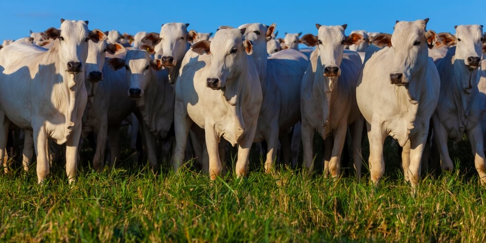

agropecuaria

Agropecuária é a junção das atividades da agricultura e pecuária. Embora o termo seja empregue em geral para definir o conjunto das atividades agrícolas, também pode ser utilizado para explicar a complexa ligação entre estas duas funções, e o estudo da forma como esta relação é feita, para atender o consumo humano e/ou para o fornecimento de matérias-primas na fabricação de roupas, medicamentos, biocombustíveis, produtos de beleza, entre outros.[1] A atividade de agropecuária é exercida tanto em larga escala, quanto por pequenos produtores que utilizam práticas tradicionais, onde o conhecimento das técnicas é repassado através de gerações. 
A agropecuária é a atividade econômica que compreende o plantio e cultivo da terra e a criação de animais, isto é, a agricultura e a pecuária. Ela é praticada no campo e depende diretamente da disponibilidade de terras. Pode ser desenvolvida em pequenas, médias e grandes propriedades. "A agropecuária é a atividade econômica que compreende o plantio e cultivo da terra e a criação de animais, isto é, a agricultura e a pecuária. Ela é praticada no campo e depende diretamente da disponibilidade de terras. Pode ser desenvolvida em pequenas, médias e grandes propriedades. Sua prática tem como objetivo a subsistência e/ou a comercialização. Atende tanto ao mercado doméstico quanto à demanda internacional por produtos primários. É classificada, de acordo com o modo de produção e a intensidade tecnológica, em intensiva ou extensiva. É importante porque é dela a origem dos alimentos que consumimos e de parte das matérias-primas utilizadas na indústria. Quando o manejo dos cultivos e das pastagens é feito de maneira inadequada, pode gerar problemas ambientais, como desmatamento, poluição de mananciais e compactação do solo. É uma das principais atividades econômicas do Brasil. A soja é o carro-chefe da sua produção no país e também um dos principais produtos de exportação, junto da carne. " Veja mais sobre "Agropecuária" em: https://brasilescola.uol.com.br/geografia/as-caracteristicas-agropecuaria.htm